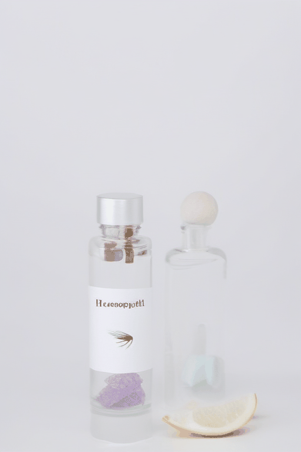

Our Story
At Revionix Homeo, our journey began with a vision—to provide holistic healing through the power of homeopathy. Over the years, we have helped thousands of patients regain their health naturally, combining traditional wisdom with modern scientific approaches.
Medicines Information
Homeopathy is a natural healing system that uses highly diluted substances to stimulate the body's innate healing mechanisms. At Revionix Homeo, we offer a wide range of homeopathic medicines that are safe, effective, and free from side effects. Our expert practitioners carefully select the right remedy for each patient, based on their unique symptoms and health history.
Successful Treatments
At Revionix Homeo, we take pride in delivering effective and lasting relief through homeopathic treatments. Over the years, we have successfully treated patients suffering from chronic diseases, skin disorders, respiratory issues, digestive problems, allergies, and more.
